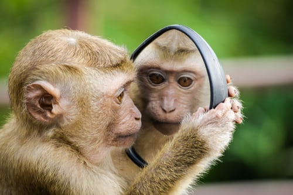
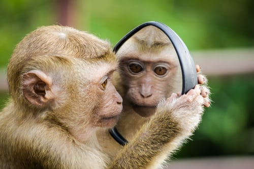

FUN FACTS ABOUT MONKEYS
This page provides Fun and Interesting facts about monkeys.
- Howlers Are Loud: Howler monkeys are the loudest land animals, and their calls can be heard up to 3 miles away through dense forests.
- Night Monkeys: Also called owl monkeys, these are the only nocturnal monkeys, active mainly at night.
- Pygmy Marvels: The pygmy marmoset, one of the smallest monkey species, is only about 6 inches long (excluding its tail) and weighs about 4 ounces.
- Cheek Pouches: Some monkeys, like macaques, have cheek pouches for temporarily storing food.
- Love for Grooming: Grooming is not just for hygiene but also a bonding activity among monkeys.
- Monkeys can recognize themselves in mirrors, showcasing self-awareness in some species
 
